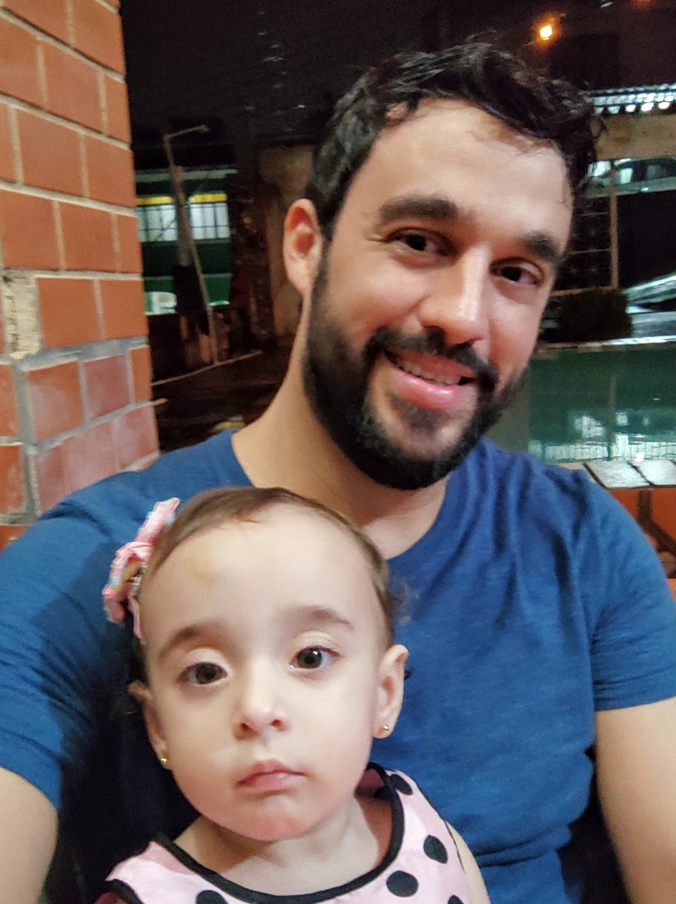

Marcio do E.S. de Araujo

Sou um Carioca de 32 anos, morador de Itaguaí-RJ. Amo tecnológia desde criança, sempre muito grato á vida!
Sou Técnico em informática e estou cursando Sistemas de informação.
Faço parte de uma linda família e pai coruja!
Hard Skills:
- Analista de suporte técnico
- Manutenção e reparo de computadores
- Manutenção e reparo de notebook
- Manutenção e reparo de impressoras
- Reparo de smartphones
- Recarga de cartucho e toner
- Unix & Bash
- Git & GitHub
- Internet
Soft skills:
- Capacidade Analítica
- Liderança de equipe
- Pontualidade
- Inteligência emocional
- Empatia
- assertividade (em desenvolvimento)
Dica para aprender mais sobre tecnologia e em especial sobre Linux
Clique pra voltar ao índice da página